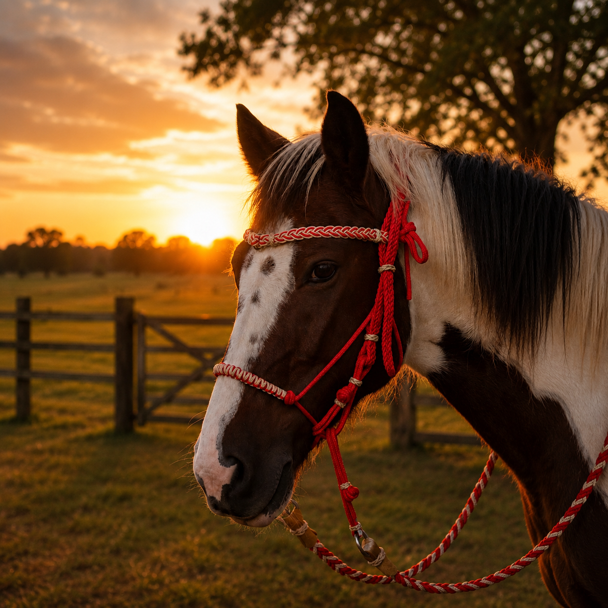

Trançado à mão com cordas de polipropileno premium, nosso cabresto distribui a pressão uniformemente — sem pontos de atrito, sem lesões, sem sofrimento. Customizado do jeito que você precisa.

[ Insira aqui a foto do
seu cabresto com o cavalo ]
Cabrestos comuns causam danos invisíveis — e você só percebe quando é tarde demais.
Cabrestos de nylon rígido criam pontos de atrito que machucam o focinho e as bochechas do cavalo com o uso contínuo.
A pressão concentrada em pontos específicos pode gerar calos, feridas e até danos nos nervos faciais sem que o tutor perceba.
Cavalos que resistem ao cabresto geralmente estão comunicando dor. O desconforto cria associações negativas duradouras.
Lesões mal cuidadas viram tratamentos caros. Prevenir com um cabresto adequado é infinitamente mais barato do que remediar.
E se existisse um cabresto que o cavalo nem percebe que está usando?
Existe — e foi feito à mão, especialmente para ele.
Dezenas de cavaleiros compartilharam sua experiência. Esses são apenas alguns.
Mariana R. · Criadora de Quarto de Milha · Ribeirão Preto
Vídeo técnico · Veterinária Equina Dra. Camila Farias
Por dentro da produção artesanal · Tempo-real
[ Substitua os placeholders pelos seus vídeos reais do YouTube ou Vimeo ]
Todos feitos à mão, todos customizáveis. Escolha as cores, o tamanho e o padrão de trança.
O favorito dos criadores. Trança dupla com polipropileno 6mm. Perfeito para uso diário.
Protetor de neoprene embutido nas áreas de pressão. Indicado para cavalos sensíveis.
Para quem quer estilo na pista. Combinação de duas cores com acabamento de show.
Especialmente desenvolvido para potros. Material mais suave, regulagem ampla.
Cabresto clássico + guia de 2m combinando. Conjunto completo com desconto especial.
Cada detalhe foi pensado por quem entende de equinos. Não é só estética — é ciência aplicada ao bem-estar animal.
A trança espiral divide a pressão em toda a extensão do cabresto, eliminando pontos de concentração de força.
Não apodrece, não deforma com a chuva, não absorve bactérias. Higiênico e durável por anos.
Escolha as cores, o tamanho e o padrão de trança. Cada peça é feita especificamente para o seu pedido.
Cada cabresto leva em média 3 horas para ser feito. Qualidade que nenhuma máquina consegue replicar.
Recomendado pela Dra. Camila Farias, especialista em bem-estar equino, após análise técnica.
Comparativo honesto
💡 Sabia que...
Cavalos com cabresto inadequado podem desenvolver comportamento de fuga, ansiedade ao manuseio e até dores crônicas na região da cabeça. A escolha do cabresto certo pode mudar completamente o temperamento do seu animal.
Não espere seu cavalo desenvolver lesões para agir. Cada dia com um cabresto inadequado é um dia a mais de desconforto para o animal que você ama.
"Minha égua Nordestina sempre foi muito difícil de cabeçar. No primeiro dia com o TraçaForte ela veio até mim para colocar. Chorei de emoção. Nunca imaginei que era o cabresto que a estava incomodando."
"Comprei o kit com guia para os meus três cavalos. A qualidade é absurda. Parece que vai durar uma vida inteira. O acabamento é impecável e as cores ficaram exatamente como pedi."
"Como veterinária, fui cética no início. Mas os resultados falam por si. Indico para todos os meus pacientes equinos com histórico de sensibilidade na cabeça. Produto sério e responsável."
"Presente de aniversário para minha filha e o cavalo dela. Quando ela viu as cores personalizadas com o nome do cavalo bordado, ficou sem palavras. É um produto de coração, feito com amor."
"Já testei pelo menos oito marcas de cabresto diferentes em 20 anos de equitação. O TraçaForte é o único que meus cavalos realmente aceitam sem resistência. Investi certo."
"Recebi em 5 dias, exatamente como encomendei. O atendimento foi incrível — me ajudaram a escolher o tamanho certo e o padrão de trança ideal para o temperamento do meu cavalo."
"Depois de 6 meses usando o TraçaForte, revisitei meu cavalo com tomografia. Zero sinal de compressão facial. Para mim, isso é a prova definitiva de que o produto faz o que promete."
— DRA. CAMILA FARIAS · VETERINÁRIA EQUINA · SÃO PAULONada é industrializado. Cada nó, cada passada de corda, cada ajuste — feito por mãos humanas que entendem de cavalos.
Usamos apenas polipropileno de grau náutico, o mesmo usado em embarcações de alto mar. Testado para resistência a UV, umidade e tração superior a 300kg. Cada lote é inspecionado manualmente antes de entrar na produção.
Com base nas medidas que você envia, cada peça é dimensionada individualmente. Oferecemos 4 tamanhos padrão e também produzimos sob medida para raças atípicas como miniatura e draft horses.
A técnica exclusiva de trança em espiral dupla distribui a pressão em toda a superfície de contato, eliminando pontos de pressão. Cada cabresto leva de 2 a 4 horas para ser trançado à mão.
Todas as extremidades são aquecidas e seladas para evitar desfiar. Cada peça passa por um teste de tração antes de ser embalada, garantindo que suporta acima de 200kg sem ceder.
Cada cabresto é embalado individualmente com o certificado de autenticidade e as instruções de cuidado. Postado em até 48h após a confirmação do pedido. Você recebe o código de rastreio por WhatsApp.
Você cuida da alimentação, da saúde, do treinamento — cuide também do que toca o rosto do seu cavalo todos os dias. Um cabresto certo não é luxo. É respeito.
🐴 Garantir meu cabresto agoraAo finalizar sua compra, você será redirecionado para o WhatsApp do nosso artesão para personalização. Produção iniciada em até 24h após confirmação.